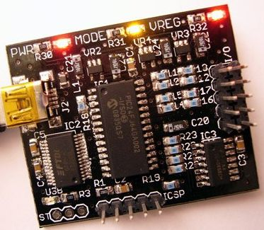

A weblog focused on interesting circuits, ideas, schematics and other information about microelectronics and microcontrollers.
E-books
Disclaimer
Because I have not tested all electronic circuits mentioned on this pages, I cannot attest to their accuracy; therefore, I do not provide a warranty of any kind and cannot be held responsible in any manner.
interface
Bus Pirate v3 - prototype
28. November 2009 - 18:50 — adminThe ‘Bus Pirate’ is a universal bus interface that talks to most chips from a PC serial terminal, eliminating a ton of early prototyping effort when working with new or unknown chips. Many serial protocols are supported at 0-5.5volts, more can be added.

(Source: Dangerous Prototypes)
AVR Ethernet I/O board
14. October 2009 - 16:39 — adminThis is really great board: AVR Ethernet I/O board with 2x RS232, 2x USB connector, BW composite video, Real Time Clock with battery backup, PS/2 keyboard connector, Wiz810MJ ethernet module and LCD 16x2 display.
Photo: Ben Zijlstra
Bus Pirate 2 - the USB version
27. June 2009 - 15:57 — adminThe Bus Pirate is a universal bus interface that talks to most chips from a PC serial terminal, eliminating a ton of early prototyping effort when working with new or unknown chips. Now with USB capabilities in the version 2.

microUSB
23. June 2009 - 17:44 — adminA smart and small solution to connecting your devices with PC via USB.

USB to Serial with ATUSB
2. June 2009 - 20:49 — adminBuild your own Benito - an USB to Serial device based on AT90USB162.

65SPI
1. March 2009 - 11:25 — adminA SPI interface for 6502 processor (probably usable with other 8bit processors too) in the CPLD.

Open Source USB to I2C Interface
28. February 2009 - 12:20 — adminBased on great Till Harbaum work (already mentioned here), Barry Carter makes this terrific USB to I2C interface.

Text video display for 8bit computer
31. January 2009 - 15:33 — adminA simple and handy 40x25 monochrome text display you can attach to your 8bit computer (based on Z80, 6502 etc.) as I/O device with parallel data bus.
I2C LCD back-pack
23. September 2008 - 8:57 — adminThe I2C LCD Back-Pack is a small(ish) PCB that can be plugged onto the back of an LCD so that you may control it over an I2C bus.